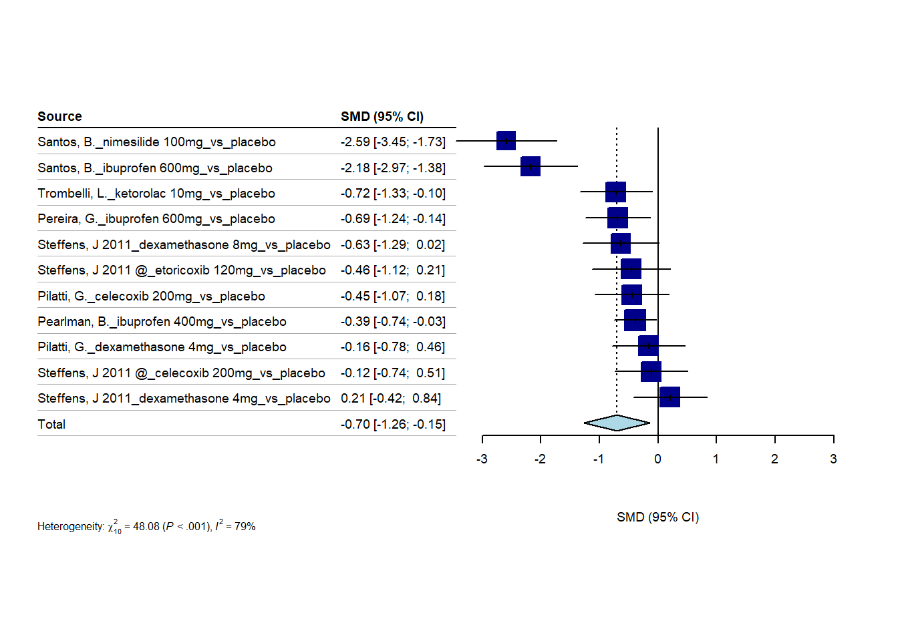

3/8/2023
2023-03-08
Last updated: 2023-08-25
Checks: 6 1
Knit directory: Collaborations/
This reproducible R Markdown analysis was created with workflowr (version 1.7.0). The Checks tab describes the reproducibility checks that were applied when the results were created. The Past versions tab lists the development history.
The R Markdown file has unstaged changes. To know which version of
the R Markdown file created these results, you’ll want to first commit
it to the Git repo. If you’re still working on the analysis, you can
ignore this warning. When you’re finished, you can run
wflow_publish to commit the R Markdown file and build the
HTML.
Great job! The global environment was empty. Objects defined in the global environment can affect the analysis in your R Markdown file in unknown ways. For reproduciblity it’s best to always run the code in an empty environment.
The command set.seed(20210523) was run prior to running
the code in the R Markdown file. Setting a seed ensures that any results
that rely on randomness, e.g. subsampling or permutations, are
reproducible.
Great job! Recording the operating system, R version, and package versions is critical for reproducibility.
Nice! There were no cached chunks for this analysis, so you can be confident that you successfully produced the results during this run.
Great job! Using relative paths to the files within your workflowr project makes it easier to run your code on other machines.
Great! You are using Git for version control. Tracking code development and connecting the code version to the results is critical for reproducibility.
The results in this page were generated with repository version 987f10a. See the Past versions tab to see a history of the changes made to the R Markdown and HTML files.
Note that you need to be careful to ensure that all relevant files for
the analysis have been committed to Git prior to generating the results
(you can use wflow_publish or
wflow_git_commit). workflowr only checks the R Markdown
file, but you know if there are other scripts or data files that it
depends on. Below is the status of the Git repository when the results
were generated:
Ignored files:
Ignored: analysis/.Rhistory
Ignored: analysis/2022_Mar2_Marinho_cache/
Ignored: analysis/figure/
Unstaged changes:
Modified: analysis/2023_0301_Christos.Rmd
Note that any generated files, e.g. HTML, png, CSS, etc., are not included in this status report because it is ok for generated content to have uncommitted changes.
These are the previous versions of the repository in which changes were
made to the R Markdown (analysis/2023_0301_Christos.Rmd)
and HTML (docs/2023_0301_Christos.html) files. If you’ve
configured a remote Git repository (see ?wflow_git_remote),
click on the hyperlinks in the table below to view the files as they
were in that past version.
| File | Version | Author | Date | Message |
|---|---|---|---|---|
| Rmd | 987f10a | Han | 2023-08-24 | 8/24/2023 |
| html | 987f10a | Han | 2023-08-24 | 8/24/2023 |
| Rmd | 5e8c202 | Han | 2023-08-23 | 8/23/2023 |
| html | 5e8c202 | Han | 2023-08-23 | 8/23/2023 |
| Rmd | 64befe3 | Han | 2023-07-19 | 7/19/2023 |
| html | 64befe3 | Han | 2023-07-19 | 7/19/2023 |
| Rmd | 04bd40f | Han | 2023-06-26 | 6/26/2023 |
| html | 04bd40f | Han | 2023-06-26 | 6/26/2023 |
| Rmd | a851367 | Han | 2023-06-26 | 6/26/2023 |
| html | a851367 | Han | 2023-06-26 | 6/26/2023 |
| Rmd | 48884b2 | Han | 2023-06-26 | 6/26/2023 |
| html | 48884b2 | Han | 2023-06-26 | 6/26/2023 |
| Rmd | 31f8333 | Han | 2023-06-07 | 6/7/2023 |
| html | 31f8333 | Han | 2023-06-07 | 6/7/2023 |
| Rmd | f296096 | Han | 2023-06-06 | 6/6/2023 |
| html | f296096 | Han | 2023-06-06 | 6/6/2023 |
| Rmd | e9ee5e1 | Han | 2023-06-06 | 6/6/2023 |
| html | e9ee5e1 | Han | 2023-06-06 | 6/6/2023 |
| Rmd | 15e0c71 | Han | 2023-06-05 | 6/5/2023 |
| Rmd | 74ade81 | Han | 2023-05-24 | 5/24/2023 |
| Rmd | fb9d51e | Han | 2023-05-17 | 5/17/2023 |
| html | fb9d51e | Han | 2023-05-17 | 5/17/2023 |
| Rmd | 89ce1ba | Han | 2023-05-15 | 5/15/2023 |
| html | 89ce1ba | Han | 2023-05-15 | 5/15/2023 |
| Rmd | e341292 | Han | 2023-05-15 | 5/15/2023 |
| html | e341292 | Han | 2023-05-15 | 5/15/2023 |
| Rmd | 0c70ed0 | Han | 2023-05-15 | 5/15/2023 |
| html | 0c70ed0 | Han | 2023-05-15 | 5/15/2023 |
| Rmd | d3ee077 | Han | 2023-04-10 | 4/10/2023 |
| html | d3ee077 | Han | 2023-04-10 | 4/10/2023 |
| Rmd | ecabd2b | Han | 2023-04-03 | 4/3/2023 |
| html | ecabd2b | Han | 2023-04-03 | 4/3/2023 |
| Rmd | c891d01 | Han | 2023-03-20 | 3/20/2023 |
| html | c891d01 | Han | 2023-03-20 | 3/20/2023 |
| Rmd | 1f23563 | Han | 2023-03-08 | 3/8/2023 |
| html | 1f23563 | Han | 2023-03-08 | 3/8/2023 |
one hour
sample data
forest plot
Number of studies combined: k = 11
Number of observations: o = 534
SMD 95%-CI z p-value
Common effect model -0.5688 [-0.7467; -0.3908] -6.27 < 0.0001
Random effects model -0.7048 [-1.1752; -0.2344] -2.94 0.0033
Quantifying heterogeneity:
tau^2 = 0.5267 [0.2036; 2.1227]; tau = 0.7257 [0.4512; 1.4570]
I^2 = 79.2% [63.4%; 88.2%]; H = 2.19 [1.65; 2.91]
Test of heterogeneity:
Q d.f. p-value
48.08 10 < 0.0001
Details on meta-analytical method:
- Inverse variance method
- Restricted maximum-likelihood estimator for tau^2
- Q-Profile method for confidence interval of tau^2 and tau
- Hedges' g (bias corrected standardised mean difference; using exact formulae)
For an individual study, a square with treatment estimate in the center and confidence interval as line extending either side of the square
For meta-analysis results, a diamond with treatment estimate in the center and right and left side corresponding to lower and upper confidence limits
heterogeneity (null hypothesis: all studies estimate the same effect) is measured by Cochran’s Q, which is calculated as the weighted sum of squared differences between individual study effects and the pooled effect across studies, following \(\chi^2\) distribution with number of studies-1 DF.
\(I^2\) statistic describes the percentage of variation across studies that is due to heterogeneity rather than chance more details.
n1=63; s1=21; n2=61; s2=25
# Calculate s_pooled
s_pooled <- sqrt( # s_pooled is pooled standard deviation
(((n1-1)*s1^2) + ((n2-1)*s2^2))/
((n1-1)+(n2-1))
)
# Calculate the standard error
se <- s_pooled*sqrt((1/n1)+(1/n2))
#se
mean1=10; mean2=19
(mean1-mean2)/s_pooled # this is SMD [1] -0.390386network meta-analysis
Original data:
treat1 treat2 TE seTE
1 ibuprofen placebo -0.3880 0.1814
2 ibuprofen placebo -0.6883 0.2807
3 dexamethasone 4mg placebo -0.1593 0.3168
4 celecoxib 200mg placebo -0.4462 0.3205
5 ibuprofen placebo -2.1752 0.4065
6 nimesilide placebo -2.5894 0.4387
7 dexamethasone 4mg placebo 0.2079 0.3213
8 dexamethasone 8mg placebo -0.6333 0.3338
9 celecoxib 200mg placebo -0.1153 0.3165
10 etoricoxib 120mg placebo -0.4563 0.3402
11 ketorolac 10mg placebo -0.7157 0.3156
Number of treatment arms (by study):
narms
1 2
2 2
3 2
4 2
5 2
6 2
7 2
8 2
9 2
10 2
11 2
Results (common effects model):
treat1 treat2 SMD 95%-CI Q leverage
1 ibuprofen placebo -0.6856 [-0.9652; -0.4060] 2.69 0.62
2 ibuprofen placebo -0.6856 [-0.9652; -0.4060] 0.00 0.26
3 dexamethasone 4mg placebo 0.0217 [-0.4204; 0.4639] 0.33 0.51
4 celecoxib 200mg placebo -0.2787 [-0.7201; 0.1628] 0.27 0.49
5 ibuprofen placebo -0.6856 [-0.9652; -0.4060] 13.43 0.12
6 nimesilide placebo -2.5894 [-3.4493; -1.7296] 0.00 1.00
7 dexamethasone 4mg placebo 0.0217 [-0.4204; 0.4639] 0.34 0.49
8 dexamethasone 8mg placebo -0.6333 [-1.2875; 0.0209] 0.00 1.00
9 celecoxib 200mg placebo -0.2787 [-0.7201; 0.1628] 0.27 0.51
10 etoricoxib 120mg placebo -0.4563 [-1.1230; 0.2105] 0.00 1.00
11 ketorolac 10mg placebo -0.7157 [-1.3342; -0.0971] 0.00 1.00
Number of studies: k = 11
Number of pairwise comparisons: m = 11
Number of treatments: n = 8
Number of designs: d = 7
Common effects model
Treatment estimate (sm = 'SMD', comparison: other treatments vs 'placebo'):
SMD 95%-CI z p-value
celecoxib 200mg -0.2787 [-0.7201; 0.1628] -1.24 0.2160
dexamethasone 4mg 0.0217 [-0.4204; 0.4639] 0.10 0.9233
dexamethasone 8mg -0.6333 [-1.2875; 0.0209] -1.90 0.0578
etoricoxib 120mg -0.4563 [-1.1230; 0.2105] -1.34 0.1799
ibuprofen -0.6856 [-0.9652; -0.4060] -4.81 < 0.0001
ketorolac 10mg -0.7157 [-1.3342; -0.0971] -2.27 0.0233
nimesilide -2.5894 [-3.4493; -1.7296] -5.90 < 0.0001
placebo . . . .
Quantifying heterogeneity / inconsistency:
tau^2 = 0.2896; tau = 0.5382; I^2 = 76.9% [44.0%; 90.5%]
Tests of heterogeneity (within designs) and inconsistency (between designs):
Q d.f. p-value
Total 17.32 4 0.0017
Within designs 17.32 4 0.0017
Between designs 0.00 0 --

P-score
nimesilide 0.9999
ibuprofen 0.6697
ketorolac 10mg 0.6640
dexamethasone 8mg 0.6066
etoricoxib 120mg 0.4811
celecoxib 200mg 0.3476
dexamethasone 4mg 0.1200
placebo 0.1110
- higher P-score, the better it is
Sample size determination
mean_difference=seq(1,20); # use the median difference as mean difference
SD=18/1.35 # use SD=IQR/1.35
sample_size=numeric()
for (i in 1:length(mean_difference))
sample_size[i]=round(power.t.test(power = .80, delta = mean_difference[i], alternative = "two.sided", sig.level=0.05, sd=SD)$n)
data.frame(mean_difference, sample_size)%>%
datatable(extensions = 'Buttons',
caption="mean difference vs sample size",
options = list(dom = 'Blfrtip',
buttons = c('copy', 'csv', 'excel', 'pdf', 'print'),
lengthMenu = list(c(10,25,50,-1),
c(10,25,50,"All"))))sample size with varying mean difference, given 80% power.
mean_difference=seq(0.1,4, by=0.5); # mean difference
SD=max(1.48,1.21) # use SD maximum
sample_size=numeric()
for (i in 1:length(mean_difference))
sample_size[i]=round(power.t.test(power = .80, delta = mean_difference[i], alternative = "two.sided", sig.level=0.05, sd=SD)$n)
data.frame(mean_difference, sample_size)%>%
datatable(extensions = 'Buttons',
caption="mean difference vs sample size",
options = list(dom = 'Blfrtip',
buttons = c('copy', 'csv', 'excel', 'pdf', 'print'),
lengthMenu = list(c(10,25,50,-1),
c(10,25,50,"All"))))- sample size with varying mean difference, given 80% power.
sessionInfo()R version 4.2.2 (2022-10-31 ucrt)
Platform: x86_64-w64-mingw32/x64 (64-bit)
Running under: Windows 10 x64 (build 19045)
Matrix products: default
locale:
[1] LC_COLLATE=English_United States.utf8
[2] LC_CTYPE=English_United States.utf8
[3] LC_MONETARY=English_United States.utf8
[4] LC_NUMERIC=C
[5] LC_TIME=English_United States.utf8
attached base packages:
[1] stats graphics grDevices utils datasets methods base
other attached packages:
[1] dmetar_0.1.0 netmeta_2.8-2 meta_6.2-1 multinma_0.5.0
[5] readxl_1.4.2 DT_0.27 rstatix_0.7.2 ggpubr_0.6.0
[9] kableExtra_1.3.4 forcats_1.0.0 stringr_1.5.0 dplyr_1.0.10
[13] purrr_1.0.1 readr_2.1.4 tidyr_1.3.0 tibble_3.1.8
[17] ggplot2_3.4.1 tidyverse_1.3.2
loaded via a namespace (and not attached):
[1] metadat_1.2-0 backports_1.4.1 workflowr_1.7.0
[4] systemfonts_1.0.4 igraph_1.4.1 splines_4.2.2
[7] crosstalk_1.2.0 rstantools_2.3.0 inline_0.3.19
[10] digest_0.6.31 htmltools_0.5.4 fansi_1.0.3
[13] magrittr_2.0.3 truncdist_1.0-2 googlesheets4_1.0.1
[16] cluster_2.1.4 tzdb_0.3.0 modelr_0.1.10
[19] RcppParallel_5.1.7 matrixStats_0.63.0 svglite_2.1.1
[22] timechange_0.2.0 prettyunits_1.1.1 colorspace_2.0-3
[25] rvest_1.0.3 ggrepel_0.9.2 haven_2.5.1
[28] rbibutils_2.2.13 xfun_0.37 callr_3.7.3
[31] crayon_1.5.2 jsonlite_1.8.4 lme4_1.1-31
[34] glue_1.6.2 gtable_0.3.1 gargle_1.3.0
[37] webshot_0.5.4 kernlab_0.9-32 car_3.1-1
[40] pkgbuild_1.4.0 evd_2.3-6.1 rstan_2.21.8
[43] DEoptimR_1.0-11 prabclus_2.3-2 abind_1.4-5
[46] scales_1.2.1 DBI_1.1.3 Rcpp_1.0.9
[49] viridisLite_0.4.1 magic_1.6-1 mclust_6.0.0
[52] stats4_4.2.2 StanHeaders_2.21.0-7 htmlwidgets_1.6.1
[55] httr_1.4.5 fpc_2.2-10 ellipsis_0.3.2
[58] modeltools_0.2-23 farver_2.1.1 pkgconfig_2.0.3
[61] loo_2.5.1 flexmix_2.3-19 nnet_7.3-18
[64] sass_0.4.5 dbplyr_2.3.0 utf8_1.2.2
[67] labeling_0.4.2 tidyselect_1.2.0 rlang_1.0.6
[70] later_1.3.0 munsell_0.5.0 cellranger_1.1.0
[73] tools_4.2.2 cachem_1.0.7 cli_3.4.1
[76] generics_0.1.3 broom_1.0.3 mathjaxr_1.6-0
[79] evaluate_0.20 fastmap_1.1.0 yaml_2.3.7
[82] processx_3.8.0 knitr_1.42 fs_1.5.2
[85] robustbase_0.95-0 nlme_3.1-160 whisker_0.4.1
[88] xml2_1.3.3 compiler_4.2.2 rstudioapi_0.14
[91] ggsignif_0.6.4 reprex_2.0.2 bslib_0.4.2
[94] stringi_1.7.8 highr_0.10 ps_1.7.2
[97] lattice_0.20-45 poibin_1.5 Matrix_1.5-1
[100] nloptr_2.0.3 vctrs_0.5.2 CompQuadForm_1.4.3
[103] pillar_1.8.1 lifecycle_1.0.3 Rdpack_2.4
[106] jquerylib_0.1.4 httpuv_1.6.9 R6_2.5.1
[109] MuMIn_1.47.5 promises_1.2.0.1 gridExtra_2.3
[112] codetools_0.2-18 boot_1.3-28 MASS_7.3-58.1
[115] assertthat_0.2.1 rprojroot_2.0.3 withr_2.5.0
[118] metafor_4.0-0 diptest_0.76-0 parallel_4.2.2
[121] hms_1.1.2 grid_4.2.2 class_7.3-20
[124] minqa_1.2.5 rmarkdown_2.20 carData_3.0-5
[127] googledrive_2.0.0 git2r_0.31.0 numDeriv_2016.8-1.1
[130] lubridate_1.9.2